Eureka neutral · neutral
Eureka neutral · smile
Eureka neutral · grin
Eureka neutral · happy
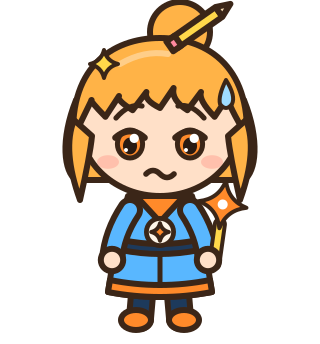
Eureka neutral · worried
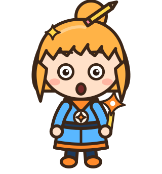
Eureka neutral · surprised
Eureka neutral · determined
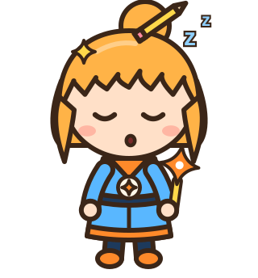
Eureka neutral · sleepy
Eureka cheer · neutral
Eureka cheer · smile
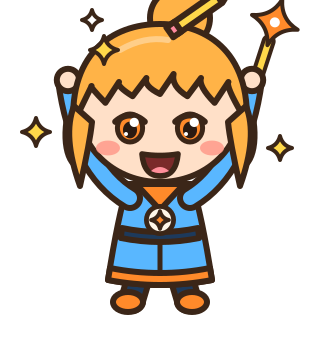
Eureka cheer · grin
Eureka cheer · happy
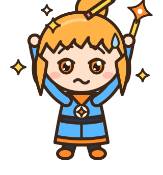
Eureka cheer · worried
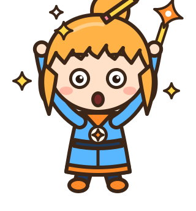
Eureka cheer · surprised
Eureka cheer · determined
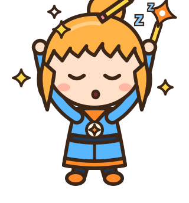
Eureka cheer · sleepy
Eureka thinking · neutral
Eureka thinking · smile
Eureka thinking · grin
Eureka thinking · happy
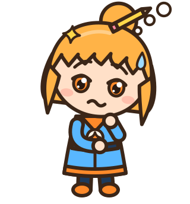
Eureka thinking · worried
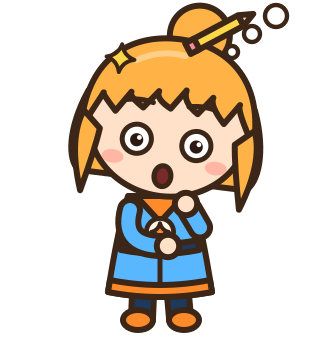
Eureka thinking · surprised
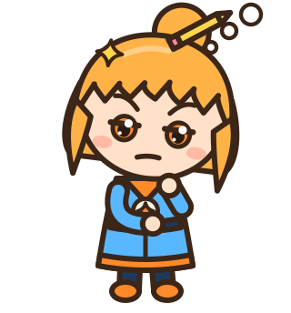
Eureka thinking · determined
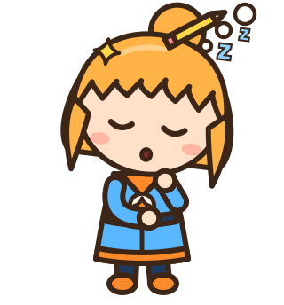
Eureka thinking · sleepy
Eureka surprised · neutral
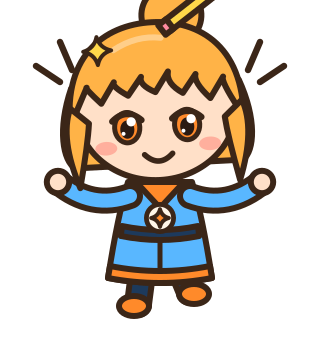
Eureka surprised · smile
Eureka surprised · grin
Eureka surprised · happy
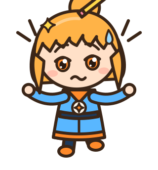
Eureka surprised · worried
Eureka surprised · surprised
Eureka surprised · determined
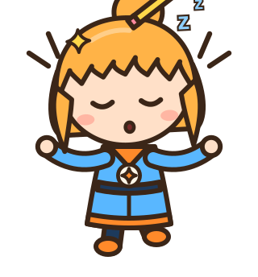
Eureka surprised · sleepy
Eureka presenting · neutral
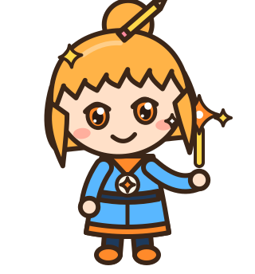
Eureka presenting · smile
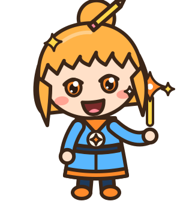
Eureka presenting · grin
Eureka presenting · happy
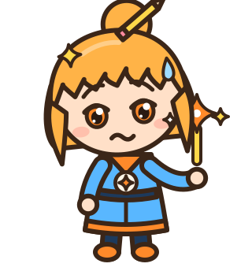
Eureka presenting · worried
Eureka presenting · surprised
Eureka presenting · determined
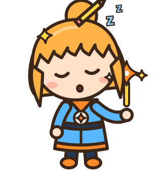
Eureka presenting · sleepy
Eureka waving · neutral
Eureka waving · smile
Eureka waving · grin
Eureka waving · happy
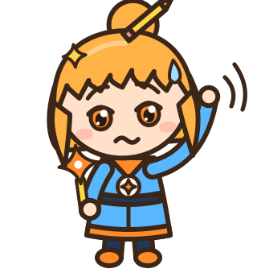
Eureka waving · worried
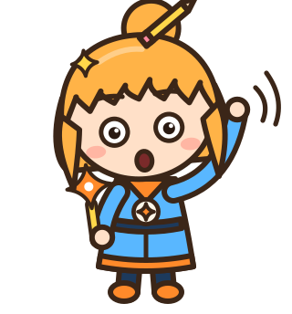
Eureka waving · surprised
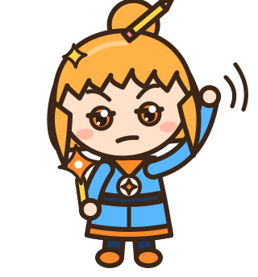
Eureka waving · determined
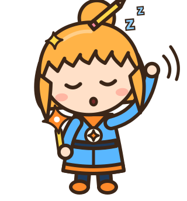
Eureka waving · sleepy
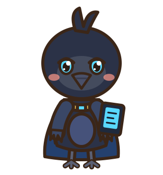
Huginn neutral · neutral
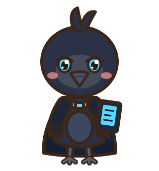
Huginn neutral · smile
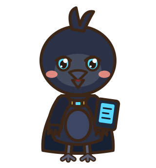
Huginn neutral · grin
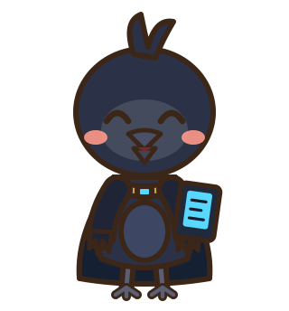
Huginn neutral · happy
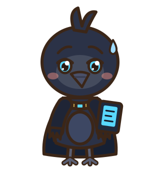
Huginn neutral · worried
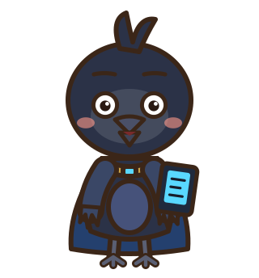
Huginn neutral · surprised
Huginn neutral · determined
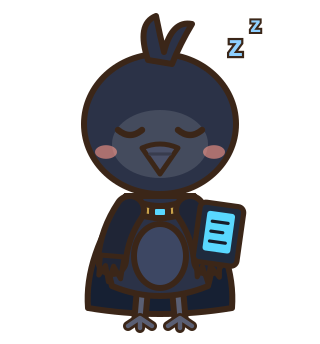
Huginn neutral · sleepy
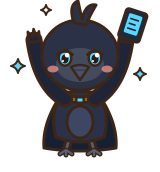
Huginn cheer · neutral
Huginn cheer · smile
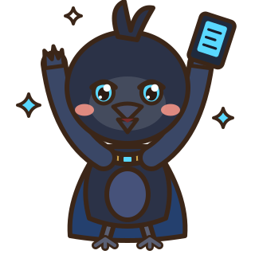
Huginn cheer · grin
Huginn cheer · happy
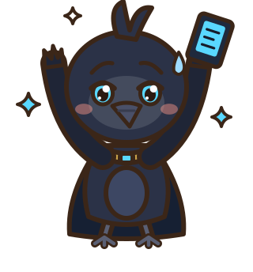
Huginn cheer · worried
Huginn cheer · surprised
Huginn cheer · determined
Huginn cheer · sleepy
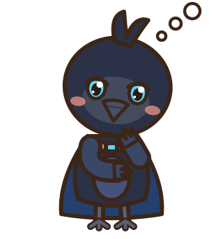
Huginn thinking · neutral
Huginn thinking · smile
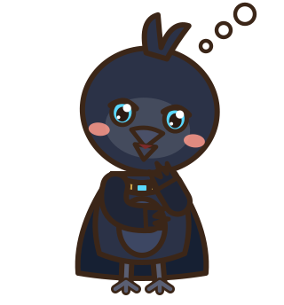
Huginn thinking · grin
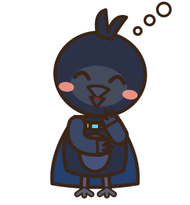
Huginn thinking · happy
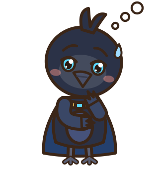
Huginn thinking · worried
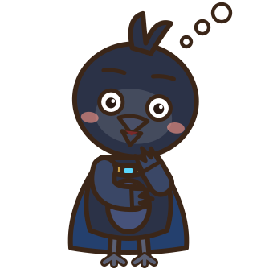
Huginn thinking · surprised
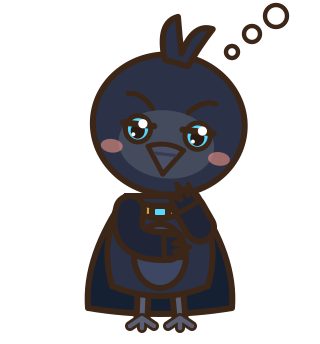
Huginn thinking · determined
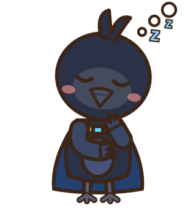
Huginn thinking · sleepy
Huginn surprised · neutral
Huginn surprised · smile
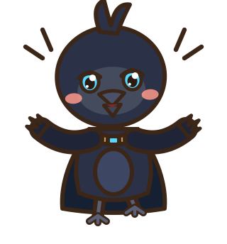
Huginn surprised · grin
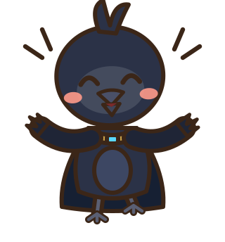
Huginn surprised · happy
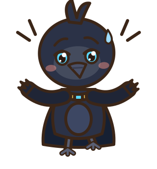
Huginn surprised · worried
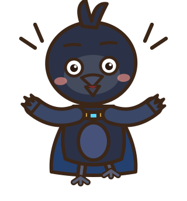
Huginn surprised · surprised
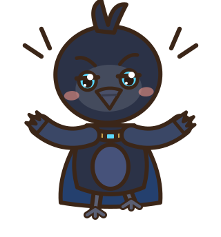
Huginn surprised · determined
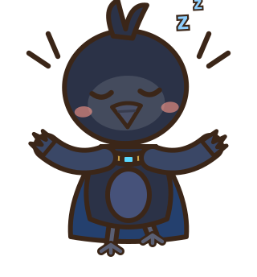
Huginn surprised · sleepy
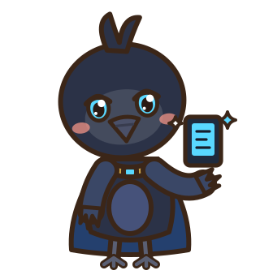
Huginn presenting · neutral
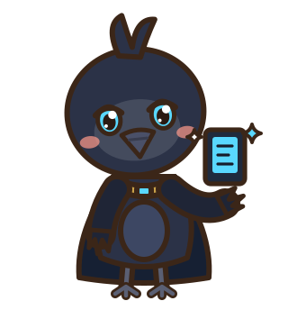
Huginn presenting · smile
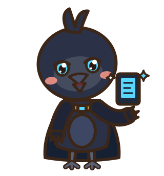
Huginn presenting · grin
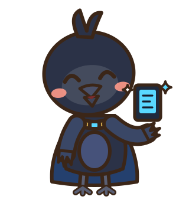
Huginn presenting · happy
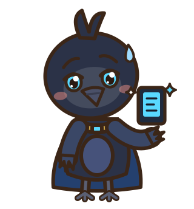
Huginn presenting · worried
Huginn presenting · surprised
Huginn presenting · determined
Huginn presenting · sleepy
Huginn waving · neutral
Huginn waving · smile
Huginn waving · grin
Huginn waving · happy
Huginn waving · worried
Huginn waving · surprised
Huginn waving · determined
Huginn waving · sleepy
Libby neutral · neutral
Libby neutral · smile
Libby neutral · grin
Libby neutral · happy
Libby neutral · worried
Libby neutral · surprised
Libby neutral · determined
Libby neutral · sleepy
Libby cheer · neutral
Libby cheer · smile
Libby cheer · grin
Libby cheer · happy
Libby cheer · worried
Libby cheer · surprised
Libby cheer · determined
Libby cheer · sleepy
Libby thinking · neutral
Libby thinking · smile
Libby thinking · grin
Libby thinking · happy
Libby thinking · worried
Libby thinking · surprised
Libby thinking · determined
Libby thinking · sleepy
Libby surprised · neutral
Libby surprised · smile
Libby surprised · grin
Libby surprised · happy
Libby surprised · worried
Libby surprised · surprised
Libby surprised · determined
Libby surprised · sleepy
Libby presenting · neutral
Libby presenting · smile
Libby presenting · grin
Libby presenting · happy
Libby presenting · worried
Libby presenting · surprised
Libby presenting · determined
Libby presenting · sleepy
Libby waving · neutral
Libby waving · smile
Libby waving · grin
Libby waving · happy
Libby waving · worried
Libby waving · surprised
Libby waving · determined
Libby waving · sleepy
Epiphany neutral · neutral
Epiphany neutral · smile
Epiphany neutral · grin
Epiphany neutral · happy
Epiphany neutral · worried
Epiphany neutral · surprised
Epiphany neutral · determined
Epiphany neutral · sleepy
Epiphany cheer · neutral
Epiphany cheer · smile
Epiphany cheer · grin
Epiphany cheer · happy
Epiphany cheer · worried
Epiphany cheer · surprised
Epiphany cheer · determined
Epiphany cheer · sleepy
Epiphany thinking · neutral
Epiphany thinking · smile
Epiphany thinking · grin
Epiphany thinking · happy
Epiphany thinking · worried
Epiphany thinking · surprised
Epiphany thinking · determined
Epiphany thinking · sleepy
Epiphany surprised · neutral
Epiphany surprised · smile
Epiphany surprised · grin
Epiphany surprised · happy
Epiphany surprised · worried
Epiphany surprised · surprised
Epiphany surprised · determined
Epiphany surprised · sleepy
Epiphany presenting · neutral
Epiphany presenting · smile
Epiphany presenting · grin
Epiphany presenting · happy
Epiphany presenting · worried
Epiphany presenting · surprised
Epiphany presenting · determined
Epiphany presenting · sleepy
Epiphany waving · neutral
Epiphany waving · smile
Epiphany waving · grin
Epiphany waving · happy
Epiphany waving · worried
Epiphany waving · surprised
Epiphany waving · determined
Epiphany waving · sleepy
Weksa neutral · neutral
Weksa neutral · smile
Weksa neutral · grin
Weksa neutral · happy
Weksa neutral · worried
Weksa neutral · surprised
Weksa neutral · determined
Weksa neutral · sleepy
Weksa cheer · neutral
Weksa cheer · smile
Weksa cheer · grin
Weksa cheer · happy
Weksa cheer · worried
Weksa cheer · surprised
Weksa cheer · determined
Weksa cheer · sleepy
Weksa thinking · neutral
Weksa thinking · smile
Weksa thinking · grin
Weksa thinking · happy
Weksa thinking · worried
Weksa thinking · surprised
Weksa thinking · determined
Weksa thinking · sleepy
Weksa surprised · neutral
Weksa surprised · smile
Weksa surprised · grin
Weksa surprised · happy
Weksa surprised · worried
Weksa surprised · surprised
Weksa surprised · determined
Weksa surprised · sleepy
Weksa presenting · neutral
Weksa presenting · smile
Weksa presenting · grin
Weksa presenting · happy
Weksa presenting · worried
Weksa presenting · surprised
Weksa presenting · determined
Weksa presenting · sleepy
Weksa waving · neutral
Weksa waving · smile
Weksa waving · grin
Weksa waving · happy
Weksa waving · worried
Weksa waving · surprised
Weksa waving · determined
Weksa waving · sleepy
Nibu neutral · smile
Nibu neutral · grin
Nibu neutral · surprised
Mimir neutral · smile
Mimir neutral · grin
Mimir neutral · surprised
Eve neutral · smile
Eve neutral · grin
Eve neutral · surprised
Kiko neutral · smile
Kiko neutral · grin
Kiko neutral · surprised
Heimdall neutral · smile
Heimdall neutral · grin
Heimdall neutral · surprised
Fensalir neutral · smile
Fensalir neutral · grin
Fensalir neutral · surprised
Druzkai neutral · smile
Druzkai neutral · grin
Druzkai neutral · surprised
Norn neutral · smile
Norn neutral · grin
Norn neutral · surprised
Sai neutral · smile
Sai neutral · grin
Sai neutral · surprised
Brokkr neutral · smile
Brokkr neutral · grin
Brokkr neutral · surprised
Aetheria neutral · smile
Aetheria neutral · grin
Aetheria neutral · surprised
Ymir neutral · smile
Ymir neutral · grin
Ymir neutral · surprised
Tengu neutral · smile
Tengu neutral · grin
Tengu neutral · surprised
Muninn neutral · smile
Muninn neutral · grin
Muninn neutral · surprised
Sleipnir neutral · smile
Sleipnir neutral · grin
Sleipnir neutral · surprised
Hermodr neutral · smile
Hermodr neutral · grin
Hermodr neutral · surprised
Metame neutral · smile
Metame neutral · grin
Metame neutral · surprised
Void neutral · smile
Void neutral · grin
Void neutral · surprised
Gjallar neutral · smile
Gjallar neutral · grin
Gjallar neutral · surprised